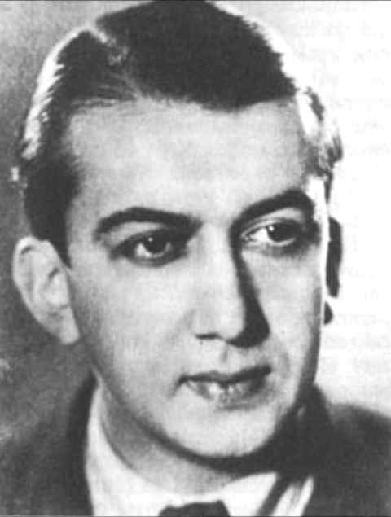
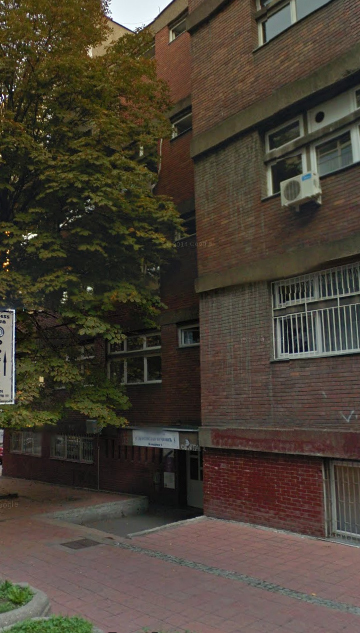

+381.65.891.36.06
Vojislav Vučković, kompozitor, muzikolog i dirigent, jedan je od najangažovanijih stvaralaca u istoriji srpske muzike. Rođen je 18. oktobra 1910. godine u Pirotu, gde je još kao gimnazijalac komponovao prva dela (Dve minijature za klavir i svita za klavir Peron). Na preporuku Miloja Milojevića, koji je zapazio njegov izrazit talenat, odlazi na muzičke studije u Prag, gde su se u međuratnom periodu školovali brojni srpski kompozitori, pripadnici takozvane praške grupe. Na praškom Državnom konzervatorijumu završio je kompoziciju i kurs dirigovanja, a potom i majstorsku školu kompozicije kod Jozefa Suka. Kao dirigent nastupio je na festivalu moderne muzike u Strazburu 1933, a naredne godine je odbranio doktorat iz muzikologije na Karlovom univerzitetu i time zaokružio svoje praške studije. Pored izvrsnog muzičkog obrazovanja i modernog stilskog usmerenja, boravak u Pragu dao je Vučkovićevoj stvaralačkoj ličnosti i snažan društveno-politički karakter, koji će po povratku u Beograd odrediti njegovu celokupnu profesionalnu delatnost. U predratnom periodu uređuje Nove informativne novine (NIN), učestvuje u redakcijama časopisa Naša stvarnost i Umetnost i kritika, organizuje recitacione horove radničke i studentske omladine, drži zapažena predavanja u okviru muzičkih časova Kolarčevog univerziteta i na Radio-Beogradu. Pored toga, angažovan je kao profesor u muzičkoj školi „Stanković“, kao sekretar muzičkog programa i dirigent orkestra Radio-Beograda, sekretar Beogradske filharmonije i Društva prijatelja slavenske muzike. Budući aktivno uključen u komunistički pokret, za vreme okupacije se povlači u ilegalu. Biva otkriven u jednoj raciji Specijalne policije i ubijen zajedno sa suprugom, slikarkom Fani Politeo, 25. decembra 1942. Vučkovićev snažan poriv da živi i stvara angažovano odredio je i njegov pristup komponovanju, kojim se bavio predano i pored brojnih drugih delatnosti. Njegova muzika izražava neposredno njegova levičarska marksistička uverenja, u početku bliska Brehtu i nadrealistima, a kasnije, u predratnim godinama, podložna snažnom uticaju sovjetske ideologije. Kompozicije iz vremena studija (Gudački kvartet i Prva simfonija), kao i one nastale neposredno po njihovom završetku (Dve pesme za sopran i duvački trio), priklanjaju se levom krilu evropske moderne između dva rata; odlikuje ih ekspresionistički linearan i atonalan, ponekad i atematski muzički jezik srodan Šenbergu i Hindemitu. Pod uticajem češkog avangardiste Aloisa Habe, Vučković je pisao i kompozicije u četvrtstepenom sistemu, čije su partiture izgubljene. Iz tog prvog perioda, koji obuhvata i nekoliko godina po povratku u Beograd – do 1939, potiču i recitacioni horovi s kamernim orkestrom Metro i Čelik se topi. Naporedo sa komponovanjem ovih najradikalnijih opusa, Vučković se u svojim teorijskim stavovima okreće sovjetskoj estetici novog realizma (socijalistički realizam). Ta nova orijentacija ispoljiće se posle 1939. i u Vučkovićevom stvaralaštvu, koje od tada nalazi neposrednu inspiraciju u aktuelnim događajima, priklanja se liniji slovenskog muzičkog realizma i pokazuje izvesno smirivanje izraza. Potrebno je naglasiti da nije u pitanju potpuno uprošćavanje muzičkog jezika kakvo je karakteristično za socrealizam, već jedan vid neoklasike sa elementima romantičarske ekspresivnosti, koji je bio aktuelan i u evropskoj muzici tog vremena. Forma je preglednija, melodika tradicionalno oblikovana, ritmika prirodnija, a harmonija je dobila perspektivu slobodne, široko shvaćene tonalnosti, u okviru koje Vučković nalazi sveža, zanimljiva rešenja. Stilski zaokret u ovom smislu proglasila je kratka kompozicija za gudački orkestar Zaveštanje Modesta Musorgskog, koja je izgrađena na osnovu motiva iz Borisa Godunova. „Simfonijski prikaz“ Ozareni put inspirisan je ulaskom Crvene armije u zapadne delove Ukrajine i Belorusije, koji su do 1939. pripadali Poljskoj. Balet Čovek koji je ukrao Sunce (napisana je samo klavirska skica) zasniva se na pripoveci češkog socijalnog pesnika Jiržija Volkera, koja kroz fantastiku bajke simbolizuje slom starog sveta. Tu su još: simfonijska poema Vesnik bure, prema istoimenoj poemi Maksima Gorkog; horovi Prva rukovet i Nadžnjeva se, kao prilog srpskom muzičkom realizmu i posveta Mokranjcu; nedovršena Druga simfonija, koja evocira ratne događaje; i poslednje, takođe nedovršeno delo – Herojski oratorijum (Treća simfonija) za mešoviti hor, soliste i orkestar, čiji tekst čine odlomci iz Njegoševog Gorskog vijenca i narodne pesme Početak bune protiv dahija, kao simbol aktuelne revolucionarne borbe. Sociološki aspekt muzike zaokupljao je Vučkovića i u napisima o muzici. O tome svedoči već njegova doktorska disertacija Muzika kao sredstvo propagande, a zatim i studija Materijalistička filozofija umetnosti, kao i zbirka eseja Muzički portreti i brojni drugi muzikološki tekstovi. Povodom četvrt veka od smrti ovog našeg kompozitora-revolucionara objavljena su njegova sabrana dela pod naslovom Studije, eseji, kritike, kao i zbornik napisa o njemu – Vojislav Vučković umetnik i borac.
Muzička škola "Dr Vojislav Vučković" je osnovana 1952. godine u Beogradu, kao škola za osnovno muzičko obrazovanje. Godine 1967. smo useljeni u namenski građenu zgradu u Kondinoj 6, gde se i danas nalazimo. Zahvaljujući značajnim obrazovnim rezultatima 1976. godine dobijamo i status srednje muzičke škole, pa od tada imamo mogućnost da formiramo mlade umetnike i ljubitelje muzike od njihovih prvih koraka u muzičkom zabavištu do srednjoškolske mature. To im, tokom čitavog perioda njihovog školovanja kod nas, obezbeđuje mogućnost kontinuiranog višegodišnjeg rada sa željenim nastavnicima. Mnogi naši đaci su uspešno nastavili svoje muzičko usavršavanje na muzičkim akademijama i fakultetima u našoj zemlji, Nemačkoj, Francuskoj, Engleskoj, Slovačkoj, Rusiji, Americi... Škola je poznata po profesionalnom i visoko obrazovanom nastavničkom kadru, pa nam učenici dolaze iz čitavog Beograda, ali i iz drugih gradova Srbije i Crne Gore. Tome doprinosi i udoban, moderan školski prostor u kome radimo. Opremljeni smo brojnim i kvalitetnim instrumentima, kao i personalnim računarima za potrebe teorijske nastave. U okviru vokalno-instrumentalnog odseka pružamo mladima mogućnost da uče solo-pevanje ili sviranje nekog od brojnih instrumenata (uz izučavanje pratećih praktičnih i teorijskih disciplina). Osim kvalitetne stručne nastave, trudimo se da učenicima pružimo i mogućnost čestih nastupa na javnim koncertima koje škola priređuje kako u sopstvenoj koncertnoj sali, tako i u renomiranim koncertnim prostorima našeg grada, kao što su sale Kolarčevog narodnog univerziteta, Beogradske filharmonije, Doma Vojske itd. Iniciramo i saradnju sa drugim muzičkim školama iz čega proističu gostovanja u drugim sredinama, kao i zajednička izvođačka ostvarenja, poput koncerta koji je imao veliki odjek u našoj kulturnoj javnosti, a na kome je izvedena "Karmina Burana" Karla Orfa. Naši đaci učestvuju na brojnim domaćim i inostranim takmičenjima na kojima postižu zapažene rezultate. Sama škola organizuje dva takmičenja međunarodnog karaktera: za klavir i harmoniku. Osim toga, škola organizuje stručne seminare i predavanja za đake i nastavnike, koje drže vodeći strani i domaći pedagozi. Ovako atraktivan i aktivan muzički život je efektna i korisna dopuna svakodnevnim nastavnim delatnostima. Ona đacima pomaže da, u okviru same škole, sagledaju mogućnosti i smernice svog budućeg bavljenja muzikom.